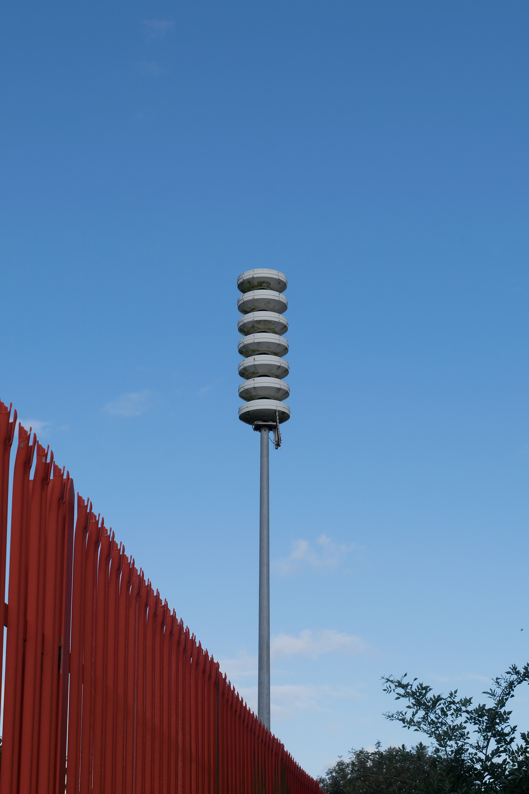
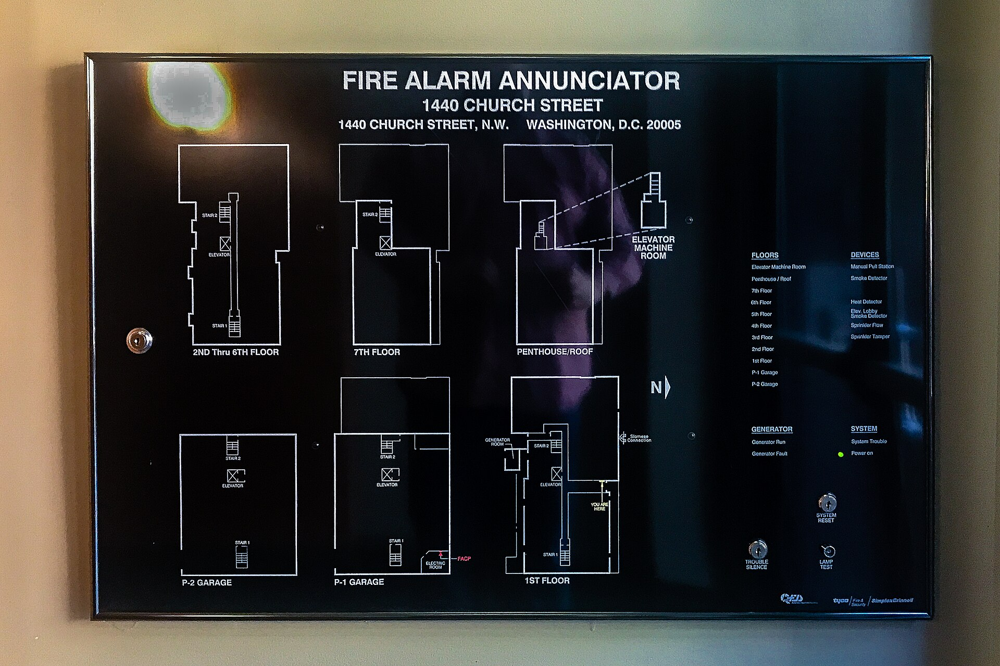
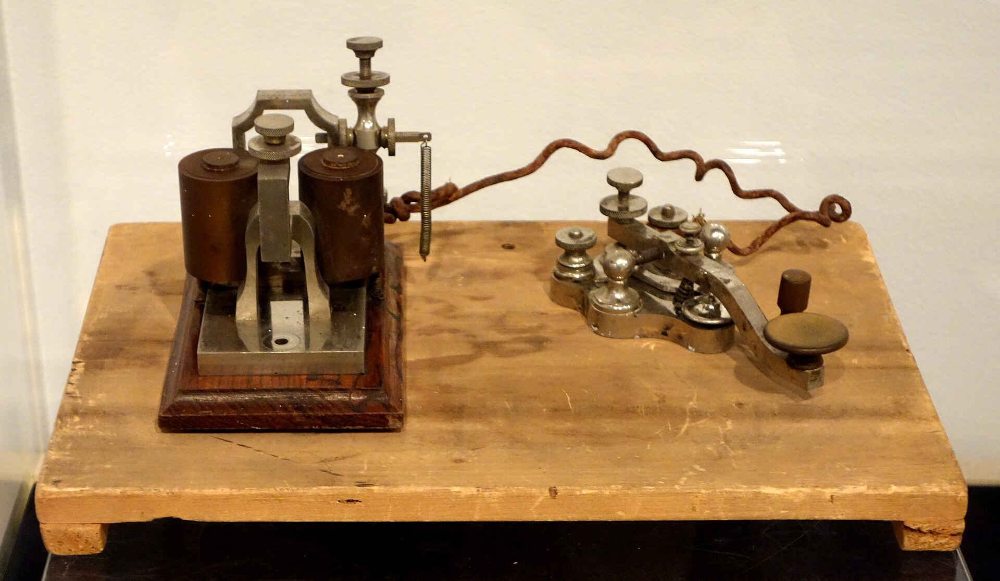

app/payments.py:142 in charge
app/routes.py:88 in post_payProduction failures, in the channel you already watch.
Six real problems, one message each. Press the button to see the same five minutes without blare.
847 occurrences in the last five minutes, delivered as this one message. Fingerprinted from the type, the line in your code, and the message with its variable parts removed, so User 4821 not found and User 9173 not found are one problem, not two.
app/payments.py:142 in charge
app/routes.py:88 in post_pay
app/middleware.py:24 in dispatch$ python -m blare --send
blare 0.1.0 (spec 1)
service checkout-api
environment production
level ERROR
dedupe 300s window, max 20/hour
state file
sinks
- slack hooks.slack.com
- discord discord.com
sending test alert...
ok https://hooks.slack.com/…
ok https://discord.com/…
# the webhook path is never printed, and never loggedTwo of those are easy. The middle one is why this is a library and not a snippet.
First, it attaches to the logging calls you already wrote, and to the hook that fires when a process dies.
Then it answers the only question that matters at 3 a.m.: is this worth waking someone for, or is it the four hundredth copy of something already reported? Suppressed occurrences ride along as a count on the next alert, so nothing is lost and no background timer is needed.
Last, it posts on a worker thread behind a bounded queue, so a chat outage can never become back-pressure on production traffic.

Ink means shipping, pale means planned. A Go service and a Python service in the same fleet group the same failure under the same fingerprint, because both pass the fixtures below.

{ "id": "varying-number-groups-together-a",
"message": "User 4821 not found",
"fingerprint": "b0a5839f239ce91c" }
{ "id": "varying-number-groups-together-b",
"message": "User 9173 not found",
"fingerprint": "b0a5839f239ce91c" }blare is a library. It tells you something broke, and then forgets. If you need to look a failure up next week, run an error tracker (Sentry, GlitchTip or Bugsink) and let blare stay out of it. Being the thin thing is the point.
A webhook URL in frontend JavaScript is a public secret: anyone can read it and spam your channel. Browser capture needs a relay through your own backend, which is a different shape of product. It comes after the server-side ports, not before.
Local variables, request bodies, response bodies and environment variable values are never collected, in any configuration. What does leave is scanned for bearer tokens, JWTs, AWS keys, GitHub and Slack tokens, PEM private keys, passwords inside connection strings, and card numbers that pass a Luhn check.
Dedupe state lives in a lock-guarded file shared by every process on the host, so four Gunicorn
workers seeing one failure send one message. Across several hosts, point BLARE_STATE at
Redis and the whole fleet deduplicates together.
No runtime dependencies at all, so there is no version conflict to drag in. Delivery never raises into the host, the queue is bounded, and a webhook that has started refusing connections costs you alerts, never requests.
pip install blareimport blare
blare.init()Then set BLARE_SINKS to the webhook URL your chat tool gave you. Confirm it is wired
up before you need it with python -m blare --send.